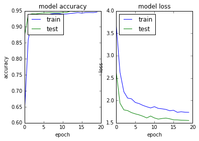

Python 3.5.2 |Anaconda custom (64-bit)| (default, Jul 5 2016, 11:41:13) [MSC v.1900 64 bit (AMD64)]
Type "copyright", "credits" or "license" for more information.
IPython 5.1.0 -- An enhanced Interactive Python.
? -> Introduction and overview of IPython's features.
%quickref -> Quick reference.
help -> Python's own help system.
object? -> Details about 'object', use 'object??' for extra details.
In [1]: runfile('C:/Users/azunre/Documents/NewKnowledge/Repositories/simon/Simon/dev/main_transfer_to_datalake_stat_pip.py', args='--nb_epoch 20 --config text-class.19-0.02.pkl', wdir='C:/Users/azunre/Documents/NewKnowledge/Repositories/simon/Simon/dev')
Using TensorFlow backend.
The available summary of data/labels is:
[('int', 985), ('text', 1118), ('datetime', 219), ('float', 814), ('address', 91), ('boolean', 39), ('phone', 18), ('daterange', 8), ('money', 152), ('percent', 206), ('coordinates', 60), ('email', 5), ('uri', 15)]
DEBUG::Fetching address category from database
DEBUG::500 cells by 91 samples fetched...
DEBUG::Fetching boolean category from database
C:\Users\azunre\Documents\NewKnowledge\Repositories\simon\Simon\dev\FetchLabeledData.py:177: FutureWarning: comparison to `None` will result in an elementwise object comparison in the future.
if(np.any(out_array==None)):
DEBUG::500 cells by 39 samples fetched...
DEBUG::Fetching datetime category from database
DEBUG::500 cells by 219 samples fetched...
DEBUG::Fetching email category from database
DEBUG::500 cells by 5 samples fetched...
DEBUG::Fetching float category from database
DEBUG::500 cells by 814 samples fetched...
DEBUG::Fetching int category from database
DEBUG::500 cells by 985 samples fetched...
DEBUG::Fetching phone category from database
DEBUG::500 cells by 18 samples fetched...
DEBUG::Fetching text category from database
failed reading data/data.cityofnewyork.us/ParkingViolationsIssued-FiscalYear2014August2013June2014.csv
Traceback (most recent call last):
File "C:\Users\azunre\Documents\NewKnowledge\Repositories\simon\Simon\dev\FetchLabeledData.py", line 140, in FetchLabeledDataColumns
col_data = frame.ix[:,column].str[-maxlen:] #do this for large text files
File "C:\Anaconda\envs\py35\lib\site-packages\pandas\core\generic.py", line 2740, in __getattr__
return object.__getattribute__(self, name)
File "C:\Anaconda\envs\py35\lib\site-packages\pandas\core\base.py", line 241, in __get__
return self.construct_accessor(instance)
File "C:\Anaconda\envs\py35\lib\site-packages\pandas\core\strings.py", line 1841, in _make_str_accessor
raise AttributeError("Can only use .str accessor with string "
AttributeError: Can only use .str accessor with string values, which use np.object_ dtype in pandas
failed reading data/data.cityofnewyork.us/PMMRFY2015DataExtract.csv
Traceback (most recent call last):
File "C:\Users\azunre\Documents\NewKnowledge\Repositories\simon\Simon\dev\FetchLabeledData.py", line 140, in FetchLabeledDataColumns
col_data = frame.ix[:,column].str[-maxlen:] #do this for large text files
File "C:\Anaconda\envs\py35\lib\site-packages\pandas\core\generic.py", line 2740, in __getattr__
return object.__getattribute__(self, name)
File "C:\Anaconda\envs\py35\lib\site-packages\pandas\core\base.py", line 241, in __get__
return self.construct_accessor(instance)
File "C:\Anaconda\envs\py35\lib\site-packages\pandas\core\strings.py", line 1841, in _make_str_accessor
raise AttributeError("Can only use .str accessor with string "
AttributeError: Can only use .str accessor with string values, which use np.object_ dtype in pandas
failed reading data/data.cityofchicago.org/Contracts.csv
Traceback (most recent call last):
File "C:\Users\azunre\Documents\NewKnowledge\Repositories\simon\Simon\dev\FetchLabeledData.py", line 140, in FetchLabeledDataColumns
col_data = frame.ix[:,column].str[-maxlen:] #do this for large text files
File "C:\Anaconda\envs\py35\lib\site-packages\pandas\core\generic.py", line 2740, in __getattr__
return object.__getattribute__(self, name)
File "C:\Anaconda\envs\py35\lib\site-packages\pandas\core\base.py", line 241, in __get__
return self.construct_accessor(instance)
File "C:\Anaconda\envs\py35\lib\site-packages\pandas\core\strings.py", line 1841, in _make_str_accessor
raise AttributeError("Can only use .str accessor with string "
AttributeError: Can only use .str accessor with string values, which use np.object_ dtype in pandas
DEBUG::500 cells by 1115 samples fetched...
DEBUG::Fetching uri category from database
DEBUG::500 cells by 15 samples fetched...
DONE w/ SQL queries...!!!
Time elapsed for DB calls (getting data from db+multilabel postprocess) is: 655.32 sec
C:\Anaconda\envs\py35\lib\site-packages\Simon\Simon.py:185: UserWarning: Update your `Conv1D` call to the Keras 2 API: `Conv1D(kernel_initializer="glorot_normal", kernel_size=1, strides=1, filters=40, padding="valid", activation="relu")`
subsample_length=1)(embedded)
WARNING:tensorflow:From C:\Anaconda\envs\py35\lib\site-packages\tensorflow\python\util\deprecation.py:497: calling conv1d (from tensorflow.python.ops.nn_ops) with data_format=NHWC is deprecated and will be removed in a future version.
Instructions for updating:
`NHWC` for data_format is deprecated, use `NWC` instead
C:\Anaconda\envs\py35\lib\site-packages\Simon\Simon.py:188: UserWarning: Update your `MaxPooling1D` call to the Keras 2 API: `MaxPooling1D(pool_size=2)`
embedded = MaxPooling1D(pool_length=pool_length)(embedded)
C:\Anaconda\envs\py35\lib\site-packages\Simon\Simon.py:185: UserWarning: Update your `Conv1D` call to the Keras 2 API: `Conv1D(kernel_initializer="glorot_normal", kernel_size=3, strides=1, filters=200, padding="valid", activation="relu")`
subsample_length=1)(embedded)
C:\Anaconda\envs\py35\lib\site-packages\Simon\Simon.py:185: UserWarning: Update your `Conv1D` call to the Keras 2 API: `Conv1D(kernel_initializer="glorot_normal", kernel_size=3, strides=1, filters=1000, padding="valid", activation="relu")`
subsample_length=1)(embedded)
C:\Anaconda\envs\py35\lib\site-packages\Simon\Simon.py:191: UserWarning: Update your `LSTM` call to the Keras 2 API: `LSTM(256, recurrent_dropout=0.2, dropout=0.2, implementation=2, return_sequences=False)`
dropout_U=0.2, consume_less='gpu')(embedded)
C:\Anaconda\envs\py35\lib\site-packages\Simon\Simon.py:193: UserWarning: Update your `LSTM` call to the Keras 2 API: `LSTM(256, recurrent_dropout=0.2, go_backwards=True, implementation=2, return_sequences=False, dropout=0.2)`
dropout_U=0.2, consume_less='gpu', go_backwards=True)(embedded)
C:\Anaconda\envs\py35\lib\site-packages\Simon\Simon.py:196: UserWarning: The `merge` function is deprecated and will be removed after 08/2017. Use instead layers from `keras.layers.merge`, e.g. `add`, `concatenate`, etc.
mode='concat', concat_axis=-1)
C:\Anaconda\envs\py35\lib\site-packages\keras\legacy\layers.py:464: UserWarning: The `Merge` layer is deprecated and will be removed after 08/2017. Use instead layers from `keras.layers.merge`, e.g. `add`, `concatenate`, etc.
name=name)
C:\Anaconda\envs\py35\lib\site-packages\Simon\Simon.py:200: UserWarning: Update your `Model` call to the Keras 2 API: `Model(inputs=Tensor("in..., outputs=Tensor("dr...)`
encoder = Model(input=in_sentence, output=sent_encode)
__________________________________________________________________________________________________
Layer (type) Output Shape Param # Connected to
==================================================================================================
input_2 (InputLayer) (None, 20) 0
__________________________________________________________________________________________________
lambda_1 (Lambda) (None, 20, 71) 0 input_2[0][0]
__________________________________________________________________________________________________
conv1d_1 (Conv1D) (None, 20, 40) 2880 lambda_1[0][0]
__________________________________________________________________________________________________
dropout_1 (Dropout) (None, 20, 40) 0 conv1d_1[0][0]
__________________________________________________________________________________________________
max_pooling1d_1 (MaxPooling1D) (None, 10, 40) 0 dropout_1[0][0]
__________________________________________________________________________________________________
conv1d_2 (Conv1D) (None, 8, 200) 24200 max_pooling1d_1[0][0]
__________________________________________________________________________________________________
dropout_2 (Dropout) (None, 8, 200) 0 conv1d_2[0][0]
__________________________________________________________________________________________________
max_pooling1d_2 (MaxPooling1D) (None, 4, 200) 0 dropout_2[0][0]
__________________________________________________________________________________________________
conv1d_3 (Conv1D) (None, 2, 1000) 601000 max_pooling1d_2[0][0]
__________________________________________________________________________________________________
dropout_3 (Dropout) (None, 2, 1000) 0 conv1d_3[0][0]
__________________________________________________________________________________________________
max_pooling1d_3 (MaxPooling1D) (None, 1, 1000) 0 dropout_3[0][0]
__________________________________________________________________________________________________
lstm_1 (LSTM) (None, 256) 1287168 max_pooling1d_3[0][0]
__________________________________________________________________________________________________
lstm_2 (LSTM) (None, 256) 1287168 max_pooling1d_3[0][0]
__________________________________________________________________________________________________
merge_1 (Merge) (None, 512) 0 lstm_1[0][0]
lstm_2[0][0]
__________________________________________________________________________________________________
dropout_4 (Dropout) (None, 512) 0 merge_1[0][0]
==================================================================================================
Total params: 3,202,416
Trainable params: 3,202,416
Non-trainable params: 0
__________________________________________________________________________________________________
None
C:\Anaconda\envs\py35\lib\site-packages\Simon\Simon.py:207: UserWarning: Update your `LSTM` call to the Keras 2 API: `LSTM(128, recurrent_dropout=0.2, dropout=0.2, implementation=2, return_sequences=False)`
dropout_U=0.2, consume_less='gpu')(encoded)
C:\Anaconda\envs\py35\lib\site-packages\Simon\Simon.py:209: UserWarning: Update your `LSTM` call to the Keras 2 API: `LSTM(128, recurrent_dropout=0.2, go_backwards=True, implementation=2, return_sequences=False, dropout=0.2)`
dropout_U=0.2, consume_less='gpu', go_backwards=True)(encoded)
C:\Anaconda\envs\py35\lib\site-packages\Simon\Simon.py:211: UserWarning: The `merge` function is deprecated and will be removed after 08/2017. Use instead layers from `keras.layers.merge`, e.g. `add`, `concatenate`, etc.
merged = merge([forwards, backwards], mode='concat', concat_axis=-1)
C:\Anaconda\envs\py35\lib\site-packages\Simon\Simon.py:217: UserWarning: Update your `Model` call to the Keras 2 API: `Model(inputs=Tensor("in..., outputs=Tensor("de...)`
model = Model(input=document, output=output)
Checkpoint : checkpoints/text-class.19-0.02.hdf5
C:\Anaconda\envs\py35\lib\site-packages\Simon\Simon.py:223: UserWarning: Update your `Model` call to the Keras 2 API: `Model(inputs=Tensor("in..., outputs=Tensor("de...)`
model = Model(input=document, output=output)
X shape: (3117, 500, 20)
y shape: (3117, 11)
starting learning
WARNING:tensorflow:From C:\Anaconda\envs\py35\lib\site-packages\tensorflow\contrib\learn\python\learn\datasets\base.py:198: retry (from tensorflow.contrib.learn.python.learn.datasets.base) is deprecated and will be removed in a future version.
Instructions for updating:
Use the retry module or similar alternatives.
C:\Anaconda\envs\py35\lib\site-packages\Simon\Simon.py:262: UserWarning: The `nb_epoch` argument in `fit` has been renamed `epochs`.
nb_epoch=nb_epoch, shuffle=True, callbacks=[earlystop_cb, check_cb, loss_history, tbCallBack])
Train on 1870 samples, validate on 935 samples
Epoch 1/20
1010/1870 [===============>..............] - ETA: 13:46 - loss: 2.7473 - binary_accuracy: 0.8059ERROR: execution aborted
In [2]: %clear
In [3]: runfile('C:/Users/azunre/Documents/NewKnowledge/Repositories/simon/Simon/dev/main_transfer_to_datalake_stat_pip.py', args='--nb_epoch 20 --batch_size 64 --config text-class.19-0.02.pkl', wdir='C:/Users/azunre/Documents/NewKnowledge/Repositories/simon/Simon/dev')
Reloaded modules: FetchLabeledData, graphutils.getConnection, azure_utils.local_config, graphutils.insertColumnDatasetJoin, LengthStandardizer, azure_utils.config, graphutils.genericJoin, azure_utils.client, graphutils.printSample
The available summary of data/labels is:
[('int', 985), ('text', 1118), ('datetime', 219), ('float', 814), ('address', 91), ('boolean', 39), ('phone', 18), ('daterange', 8), ('money', 152), ('percent', 206), ('coordinates', 60), ('email', 5), ('uri', 15)]
DEBUG::Fetching address category from database
DEBUG::500 cells by 91 samples fetched...
DEBUG::Fetching boolean category from database
C:\Users\azunre\Documents\NewKnowledge\Repositories\simon\Simon\dev\FetchLabeledData.py:177: FutureWarning: comparison to `None` will result in an elementwise object comparison in the future.
if(np.any(out_array==None)):
DEBUG::500 cells by 39 samples fetched...
DEBUG::Fetching datetime category from database
DEBUG::500 cells by 219 samples fetched...
DEBUG::Fetching email category from database
DEBUG::500 cells by 5 samples fetched...
DEBUG::Fetching float category from database
DEBUG::500 cells by 814 samples fetched...
DEBUG::Fetching int category from database
DEBUG::500 cells by 985 samples fetched...
DEBUG::Fetching phone category from database
DEBUG::500 cells by 18 samples fetched...
DEBUG::Fetching text category from database
failed reading data/data.cityofnewyork.us/ParkingViolationsIssued-FiscalYear2014August2013June2014.csv
Traceback (most recent call last):
File "C:\Users\azunre\Documents\NewKnowledge\Repositories\simon\Simon\dev\FetchLabeledData.py", line 140, in FetchLabeledDataColumns
col_data = frame.ix[:,column].str[-maxlen:] #do this for large text files
File "C:\Anaconda\envs\py35\lib\site-packages\pandas\core\generic.py", line 2740, in __getattr__
return object.__getattribute__(self, name)
File "C:\Anaconda\envs\py35\lib\site-packages\pandas\core\base.py", line 241, in __get__
return self.construct_accessor(instance)
File "C:\Anaconda\envs\py35\lib\site-packages\pandas\core\strings.py", line 1841, in _make_str_accessor
raise AttributeError("Can only use .str accessor with string "
AttributeError: Can only use .str accessor with string values, which use np.object_ dtype in pandas
failed reading data/data.cityofnewyork.us/PMMRFY2015DataExtract.csv
Traceback (most recent call last):
File "C:\Users\azunre\Documents\NewKnowledge\Repositories\simon\Simon\dev\FetchLabeledData.py", line 140, in FetchLabeledDataColumns
col_data = frame.ix[:,column].str[-maxlen:] #do this for large text files
File "C:\Anaconda\envs\py35\lib\site-packages\pandas\core\generic.py", line 2740, in __getattr__
return object.__getattribute__(self, name)
File "C:\Anaconda\envs\py35\lib\site-packages\pandas\core\base.py", line 241, in __get__
return self.construct_accessor(instance)
File "C:\Anaconda\envs\py35\lib\site-packages\pandas\core\strings.py", line 1841, in _make_str_accessor
raise AttributeError("Can only use .str accessor with string "
AttributeError: Can only use .str accessor with string values, which use np.object_ dtype in pandas
failed reading data/data.cityofchicago.org/Contracts.csv
Traceback (most recent call last):
File "C:\Users\azunre\Documents\NewKnowledge\Repositories\simon\Simon\dev\FetchLabeledData.py", line 140, in FetchLabeledDataColumns
col_data = frame.ix[:,column].str[-maxlen:] #do this for large text files
File "C:\Anaconda\envs\py35\lib\site-packages\pandas\core\generic.py", line 2740, in __getattr__
return object.__getattribute__(self, name)
File "C:\Anaconda\envs\py35\lib\site-packages\pandas\core\base.py", line 241, in __get__
return self.construct_accessor(instance)
File "C:\Anaconda\envs\py35\lib\site-packages\pandas\core\strings.py", line 1841, in _make_str_accessor
raise AttributeError("Can only use .str accessor with string "
AttributeError: Can only use .str accessor with string values, which use np.object_ dtype in pandas
DEBUG::500 cells by 1115 samples fetched...
DEBUG::Fetching uri category from database
DEBUG::500 cells by 15 samples fetched...
DONE w/ SQL queries...!!!
Time elapsed for DB calls (getting data from db+multilabel postprocess) is: 575.98 sec
C:\Anaconda\envs\py35\lib\site-packages\Simon\Simon.py:185: UserWarning: Update your `Conv1D` call to the Keras 2 API: `Conv1D(kernel_initializer="glorot_normal", kernel_size=1, strides=1, filters=40, padding="valid", activation="relu")`
subsample_length=1)(embedded)
C:\Anaconda\envs\py35\lib\site-packages\Simon\Simon.py:188: UserWarning: Update your `MaxPooling1D` call to the Keras 2 API: `MaxPooling1D(pool_size=2)`
embedded = MaxPooling1D(pool_length=pool_length)(embedded)
C:\Anaconda\envs\py35\lib\site-packages\Simon\Simon.py:185: UserWarning: Update your `Conv1D` call to the Keras 2 API: `Conv1D(kernel_initializer="glorot_normal", kernel_size=3, strides=1, filters=200, padding="valid", activation="relu")`
subsample_length=1)(embedded)
C:\Anaconda\envs\py35\lib\site-packages\Simon\Simon.py:185: UserWarning: Update your `Conv1D` call to the Keras 2 API: `Conv1D(kernel_initializer="glorot_normal", kernel_size=3, strides=1, filters=1000, padding="valid", activation="relu")`
subsample_length=1)(embedded)
C:\Anaconda\envs\py35\lib\site-packages\Simon\Simon.py:191: UserWarning: Update your `LSTM` call to the Keras 2 API: `LSTM(256, recurrent_dropout=0.2, dropout=0.2, implementation=2, return_sequences=False)`
dropout_U=0.2, consume_less='gpu')(embedded)
C:\Anaconda\envs\py35\lib\site-packages\Simon\Simon.py:193: UserWarning: Update your `LSTM` call to the Keras 2 API: `LSTM(256, recurrent_dropout=0.2, go_backwards=True, implementation=2, return_sequences=False, dropout=0.2)`
dropout_U=0.2, consume_less='gpu', go_backwards=True)(embedded)
C:\Anaconda\envs\py35\lib\site-packages\Simon\Simon.py:196: UserWarning: The `merge` function is deprecated and will be removed after 08/2017. Use instead layers from `keras.layers.merge`, e.g. `add`, `concatenate`, etc.
mode='concat', concat_axis=-1)
C:\Anaconda\envs\py35\lib\site-packages\keras\legacy\layers.py:464: UserWarning: The `Merge` layer is deprecated and will be removed after 08/2017. Use instead layers from `keras.layers.merge`, e.g. `add`, `concatenate`, etc.
name=name)
C:\Anaconda\envs\py35\lib\site-packages\Simon\Simon.py:200: UserWarning: Update your `Model` call to the Keras 2 API: `Model(inputs=Tensor("in..., outputs=Tensor("dr...)`
encoder = Model(input=in_sentence, output=sent_encode)
__________________________________________________________________________________________________
Layer (type) Output Shape Param # Connected to
==================================================================================================
input_4 (InputLayer) (None, 20) 0
__________________________________________________________________________________________________
lambda_2 (Lambda) (None, 20, 71) 0 input_4[0][0]
__________________________________________________________________________________________________
conv1d_4 (Conv1D) (None, 20, 40) 2880 lambda_2[0][0]
__________________________________________________________________________________________________
dropout_7 (Dropout) (None, 20, 40) 0 conv1d_4[0][0]
__________________________________________________________________________________________________
max_pooling1d_4 (MaxPooling1D) (None, 10, 40) 0 dropout_7[0][0]
__________________________________________________________________________________________________
conv1d_5 (Conv1D) (None, 8, 200) 24200 max_pooling1d_4[0][0]
__________________________________________________________________________________________________
dropout_8 (Dropout) (None, 8, 200) 0 conv1d_5[0][0]
__________________________________________________________________________________________________
max_pooling1d_5 (MaxPooling1D) (None, 4, 200) 0 dropout_8[0][0]
__________________________________________________________________________________________________
conv1d_6 (Conv1D) (None, 2, 1000) 601000 max_pooling1d_5[0][0]
__________________________________________________________________________________________________
dropout_9 (Dropout) (None, 2, 1000) 0 conv1d_6[0][0]
__________________________________________________________________________________________________
max_pooling1d_6 (MaxPooling1D) (None, 1, 1000) 0 dropout_9[0][0]
__________________________________________________________________________________________________
lstm_5 (LSTM) (None, 256) 1287168 max_pooling1d_6[0][0]
__________________________________________________________________________________________________
lstm_6 (LSTM) (None, 256) 1287168 max_pooling1d_6[0][0]
__________________________________________________________________________________________________
merge_3 (Merge) (None, 512) 0 lstm_5[0][0]
lstm_6[0][0]
__________________________________________________________________________________________________
dropout_10 (Dropout) (None, 512) 0 merge_3[0][0]
==================================================================================================
Total params: 3,202,416
Trainable params: 3,202,416
Non-trainable params: 0
__________________________________________________________________________________________________
None
C:\Anaconda\envs\py35\lib\site-packages\Simon\Simon.py:207: UserWarning: Update your `LSTM` call to the Keras 2 API: `LSTM(128, recurrent_dropout=0.2, dropout=0.2, implementation=2, return_sequences=False)`
dropout_U=0.2, consume_less='gpu')(encoded)
C:\Anaconda\envs\py35\lib\site-packages\Simon\Simon.py:209: UserWarning: Update your `LSTM` call to the Keras 2 API: `LSTM(128, recurrent_dropout=0.2, go_backwards=True, implementation=2, return_sequences=False, dropout=0.2)`
dropout_U=0.2, consume_less='gpu', go_backwards=True)(encoded)
C:\Anaconda\envs\py35\lib\site-packages\Simon\Simon.py:211: UserWarning: The `merge` function is deprecated and will be removed after 08/2017. Use instead layers from `keras.layers.merge`, e.g. `add`, `concatenate`, etc.
merged = merge([forwards, backwards], mode='concat', concat_axis=-1)
C:\Anaconda\envs\py35\lib\site-packages\Simon\Simon.py:217: UserWarning: Update your `Model` call to the Keras 2 API: `Model(inputs=Tensor("in..., outputs=Tensor("de...)`
model = Model(input=document, output=output)
Checkpoint : checkpoints/text-class.19-0.02.hdf5
C:\Anaconda\envs\py35\lib\site-packages\Simon\Simon.py:223: UserWarning: Update your `Model` call to the Keras 2 API: `Model(inputs=Tensor("in..., outputs=Tensor("de...)`
model = Model(input=document, output=output)
X shape: (3117, 500, 20)
y shape: (3117, 11)
starting learning
C:\Anaconda\envs\py35\lib\site-packages\Simon\Simon.py:262: UserWarning: The `nb_epoch` argument in `fit` has been renamed `epochs`.
nb_epoch=nb_epoch, shuffle=True, callbacks=[earlystop_cb, check_cb, loss_history, tbCallBack])
Train on 1870 samples, validate on 935 samples
Epoch 1/20
1870/1870 [==============================] - 1683s 900ms/step - loss: 3.7066 - binary_accuracy: 0.6255 - val_loss: 2.6464 - val_binary_accuracy: 0.8689
Epoch 2/20
1870/1870 [==============================] - 1656s 886ms/step - loss: 2.6292 - binary_accuracy: 0.8598 - val_loss: 1.9381 - val_binary_accuracy: 0.9379
Epoch 3/20
1870/1870 [==============================] - 1660s 888ms/step - loss: 2.1950 - binary_accuracy: 0.9241 - val_loss: 1.7902 - val_binary_accuracy: 0.9405
Epoch 4/20
1870/1870 [==============================] - 1664s 890ms/step - loss: 2.0523 - binary_accuracy: 0.9325 - val_loss: 1.7725 - val_binary_accuracy: 0.9401
Epoch 5/20
1870/1870 [==============================] - 1668s 892ms/step - loss: 2.0359 - binary_accuracy: 0.9356 - val_loss: 1.7284 - val_binary_accuracy: 0.9424
Epoch 6/20
1870/1870 [==============================] - 1669s 893ms/step - loss: 1.9551 - binary_accuracy: 0.9378 - val_loss: 1.7002 - val_binary_accuracy: 0.9434
Epoch 7/20
1870/1870 [==============================] - 1671s 893ms/step - loss: 1.9290 - binary_accuracy: 0.9373 - val_loss: 1.6776 - val_binary_accuracy: 0.9439
Epoch 8/20
1870/1870 [==============================] - 1673s 895ms/step - loss: 1.8890 - binary_accuracy: 0.9404 - val_loss: 1.6471 - val_binary_accuracy: 0.9446
Epoch 9/20
1870/1870 [==============================] - 1675s 896ms/step - loss: 1.8589 - binary_accuracy: 0.9415 - val_loss: 1.6098 - val_binary_accuracy: 0.9437
Epoch 10/20
1870/1870 [==============================] - 1680s 898ms/step - loss: 1.8325 - binary_accuracy: 0.9414 - val_loss: 1.6518 - val_binary_accuracy: 0.9438
Epoch 11/20
1870/1870 [==============================] - 1686s 901ms/step - loss: 1.8610 - binary_accuracy: 0.9394 - val_loss: 1.6092 - val_binary_accuracy: 0.9450
Epoch 12/20
1870/1870 [==============================] - 1688s 903ms/step - loss: 1.8228 - binary_accuracy: 0.9401 - val_loss: 1.5838 - val_binary_accuracy: 0.9449
Epoch 13/20
1870/1870 [==============================] - 1691s 904ms/step - loss: 1.8130 - binary_accuracy: 0.9419 - val_loss: 1.5970 - val_binary_accuracy: 0.9489
Epoch 14/20
1870/1870 [==============================] - 1693s 905ms/step - loss: 1.7992 - binary_accuracy: 0.9428 - val_loss: 1.6058 - val_binary_accuracy: 0.9480
Epoch 15/20
1870/1870 [==============================] - 1689s 903ms/step - loss: 1.7701 - binary_accuracy: 0.9446 - val_loss: 1.5903 - val_binary_accuracy: 0.9484
Epoch 16/20
1870/1870 [==============================] - 1693s 905ms/step - loss: 1.7804 - binary_accuracy: 0.9428 - val_loss: 1.5669 - val_binary_accuracy: 0.9492
Epoch 17/20
1870/1870 [==============================] - 1699s 909ms/step - loss: 1.7350 - binary_accuracy: 0.9446 - val_loss: 1.5657 - val_binary_accuracy: 0.9484
Epoch 18/20
1870/1870 [==============================] - 1695s 907ms/step - loss: 1.7473 - binary_accuracy: 0.9448 - val_loss: 1.5589 - val_binary_accuracy: 0.9485
Epoch 19/20
1870/1870 [==============================] - 1697s 907ms/step - loss: 1.7371 - binary_accuracy: 0.9445 - val_loss: 1.5564 - val_binary_accuracy: 0.9485
Epoch 20/20
1870/1870 [==============================] - 1701s 910ms/step - loss: 1.7344 - binary_accuracy: 0.9460 - val_loss: 1.5517 - val_binary_accuracy: 0.9496
losses:
[3.7065765702150721, 2.6292431942281875, 2.1950463764170274, 2.0523059280160916, 2.0358950136817073, 1.9550864296163468, 1.9289793863653499, 1.8889631879520927, 1.8589320986028661, 1.8325412828017047, 1.8609855070471126, 1.8228444421992582, 1.8129728592653325, 1.7991815737862, 1.7701297972929031, 1.7804242506384211, 1.7349793840857113, 1.7473174916231695, 1.7371165358446499, 1.7344329060080217]
accuracies:
[0.86893538128245962, 0.93787072227600421, 0.940495899590579, 0.94010696844621133, 0.94244048257562563, 0.9434127511187671, 0.94389890445107449, 0.94457951949879448, 0.94370443929325454, 0.94380168774548701, 0.94496842316765195, 0.94487119173621115, 0.94885758588658298, 0.94798253545149125, 0.94837144141528695, 0.94924649695024133, 0.94837144549517705, 0.94846866220076453, 0.94846867036054483, 0.94963541356000036]
Time for training is 33662.211272 sec

Starting predictions:
Accuracy: 94.77%
Time: 21.34375023841858s
Time/example : 0.06862942198848418s/ex
311/311 [==============================] - 22s 70ms/step
DEBUG::y_test:
[[0 0 1 ..., 0 0 0]
[0 0 0 ..., 0 0 0]
[0 0 1 ..., 0 0 0]
...,
[0 0 1 ..., 0 1 0]
[0 0 0 ..., 0 0 0]
[0 0 0 ..., 0 0 0]]
DEBUG::y_pred:
[[ 0. 0. 1. ..., 0. 0. 0.]
[ 0. 0. 1. ..., 0. 0. 0.]
[ 0. 0. 0. ..., 0. 0. 0.]
...,
[ 0. 0. 1. ..., 0. 1. 0.]
[ 0. 0. 0. ..., 0. 0. 0.]
[ 0. 0. 0. ..., 0. 0. 0.]]
'Binary' accuracy (true positives + true negatives) is:
(0.94767611809412455, array([ 0.95819936, 0.98392283, 0.71382637, 0.9903537 , 1. ,
0.9903537 , 0.9807074 , 0.82958199, 0.99678457, 0.98713826,
0.99356913]), array([[ 1., 1., 1., ..., 1., 1., 1.],
[ 1., 1., 0., ..., 1., 1., 1.],
[ 1., 1., 0., ..., 1., 1., 1.],
...,
[ 1., 1., 1., ..., 1., 1., 1.],
[ 1., 1., 1., ..., 1., 1., 1.],
[ 1., 1., 1., ..., 1., 1., 1.]]))
'Binary' confusion (false positives + false negatives) is:
(0.052323881905875474, array([ 0.04180064, 0.01607717, 0.28617363, 0.0096463 , 0. ,
0.0096463 , 0.0192926 , 0.17041801, 0.00321543, 0.01286174,
0.00643087]), array([[ 0., 0., 0., ..., 0., 0., 0.],
[ 0., 0., 1., ..., 0., 0., 0.],
[ 0., 0., 1., ..., 0., 0., 0.],
...,
[ 0., 0., 0., ..., 0., 0., 0.],
[ 0., 0., 0., ..., 0., 0., 0.],
[ 0., 0., 0., ..., 0., 0., 0.]]))
False positive matrix is:
(142.0, array([ 4., 0., 2., 10., 0., 4., 86., 0., 0., 36., 0.]), array([[ 0., 0., 2., 0., 0., 0., 0., 0., 0., 3., 0.],
[ 0., 0., 0., 0., 0., 0., 0., 0., 0., 1., 0.],
[ 4., 0., 0., 5., 0., 1., 43., 0., 0., 32., 0.],
[ 0., 0., 0., 0., 0., 0., 0., 0., 0., 0., 0.],
[ 0., 0., 0., 0., 0., 0., 0., 0., 0., 0., 0.],
[ 0., 0., 0., 0., 0., 0., 1., 0., 0., 0., 0.],
[ 0., 0., 0., 0., 0., 1., 0., 0., 0., 0., 0.],
[ 0., 0., 0., 5., 0., 1., 42., 0., 0., 0., 0.],
[ 0., 0., 0., 0., 0., 0., 0., 0., 0., 0., 0.],
[ 0., 0., 0., 0., 0., 1., 0., 0., 0., 0., 0.],
[ 0., 0., 0., 0., 0., 0., 0., 0., 0., 0., 0.]]))
In [4]: